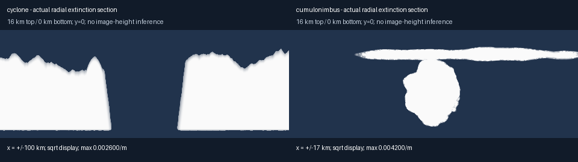
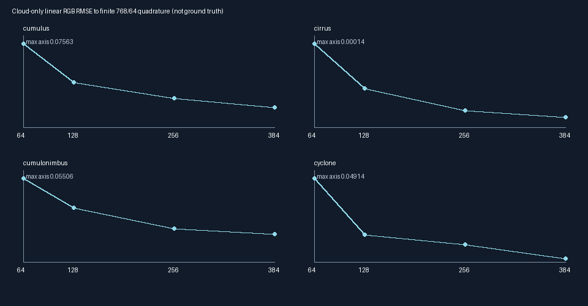

Loading retained capture identities…
Native cloud integration
No cloud photograph or colour-history input.
Six independently rendered pictures, 30 simulated seconds apart. No interpolation; not real time.
1,475,747Native scalar / texel assertions, not independent cases
6,400Software-Vulkan density, solar, mip, wind and angular probes
Not acceptedPhotographic / production appearance

